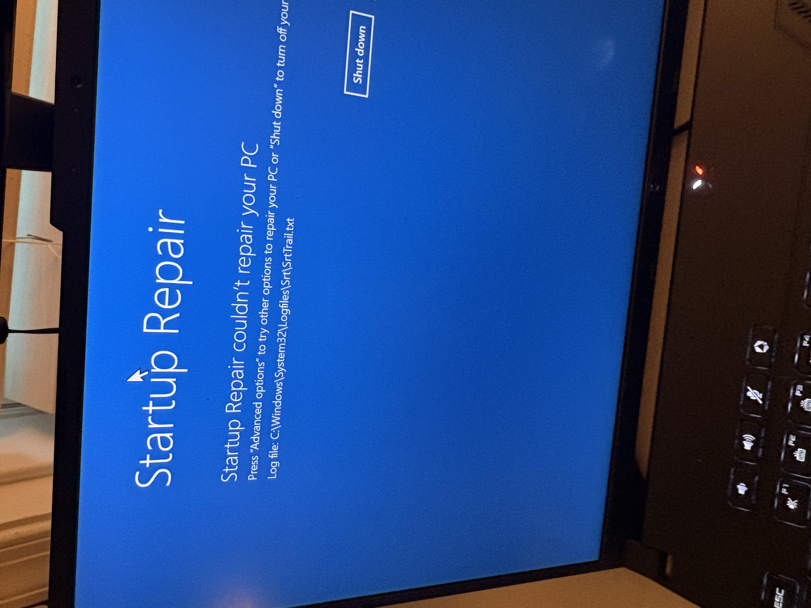
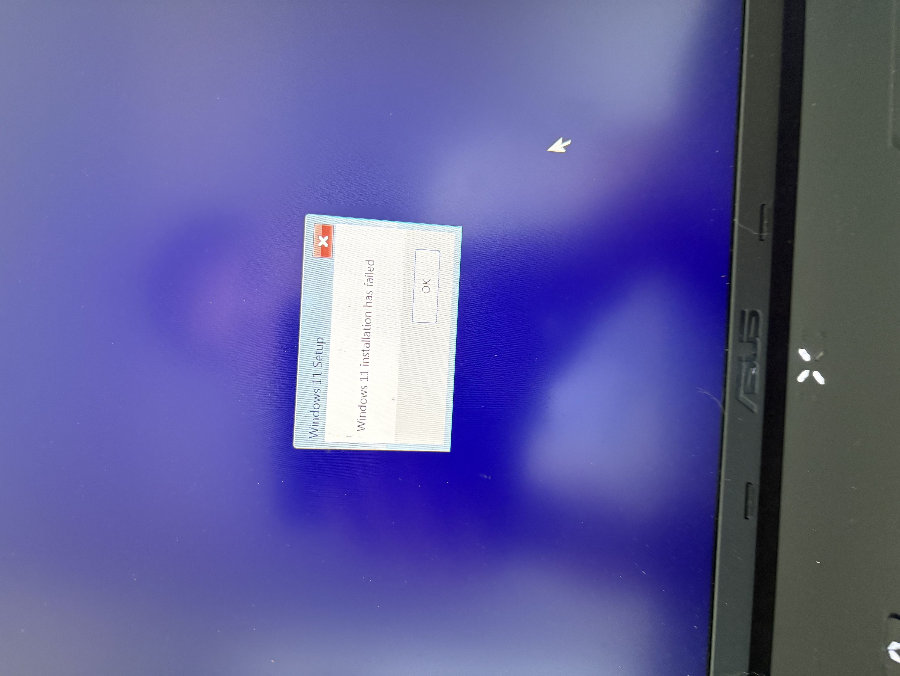

Heavily Corrupted Windows Files Computer Fix
Windows 11Corrupted System FilesYesterday, I was about to play games with my cousin, but upon opening their gaming laptop, a Bitlocker key screen appeared. This was strange because they did not enable Bitlocker on their computer. I have personally set up computers with Bitlocker before at Virginia Green, so it was strange when this appeared. Keep in mind, my cousin did not know what Bitlocker was, and they didn't intentionally enable it on their computer.
I helped them log in with their Bitlocker key that was automatically provided by signing into their Microsoft account online. My plan was just to disable Bitlocker and move on, however, their computer crashed upon boot. I forgot what the exact error was, but, essentially, something went wrong in Windows' boot process, and it entered WinRE.
No problem! I could just repair the corrupted files with the automatic repair tools in WinRE! Nope. I don't remember a time those automatic repairs have every been successful from my experience. So, I utilized sfc, dism, and chkdsk. Actually, before I could use dism on the windows files, I had to decrypt the C: drive because of Bitlocker. I disabled BitLocker in the administrator command prompt within WinRE (SHIFT + F10, btw). Sfc and chkdsk could not find anything, and dism could not even run. My theory is that the Windows Update Client files were also corrupted.

At this point, I spent more time than I would have liked troubleshooting this. Thankfully, my cousin did not have anything she needed on the computer. So, I decided to do a clean install. I've done this multipe times before with a USB stick and changing the boot order in the UEFI settings. However, this was the first time that a clean install FAILED for me.

Originally, I could have still clean installed and save the data, however, something in the Windows system partition was so corrupted that I could not clean install without completely deleting the partitions. I utilized diskpart and the native GUI partition display in the clean install Windows setup to do this. Again, thankfully they did not need any data on this computer, so I could delete these. After deleting the partitions, I was able to successfully clean install Windows.
Finally, I downloaded all the laptop-specific drivers and apps, signed into things, and personalized the PC. It was now fixed and ready for use again. I'm a good cousin :).
I don't know the original cause for sure, but given that they hardly open their computer, it was most likely an interrupted Windows update. Or malware (one of the downsides of downloading some games on the internet from non-reputable places).